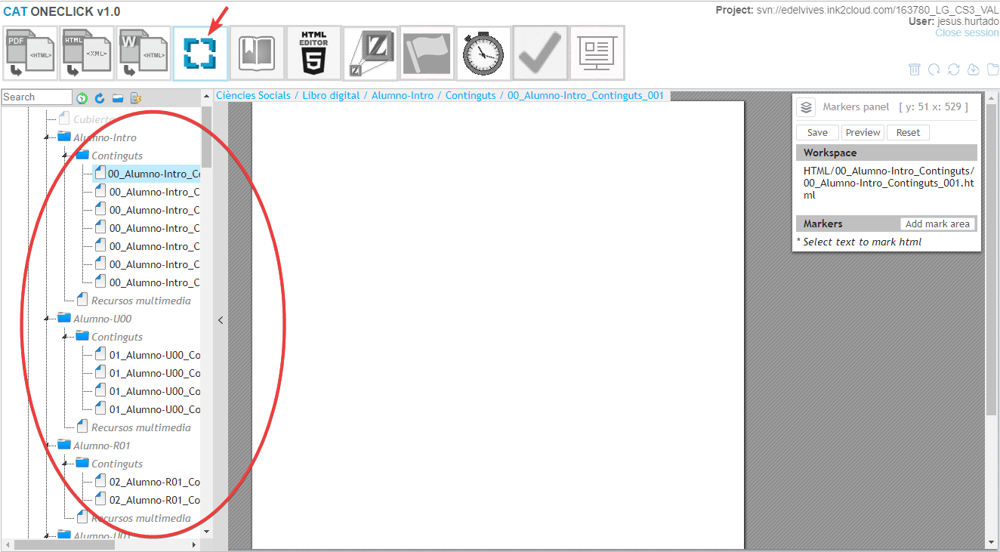
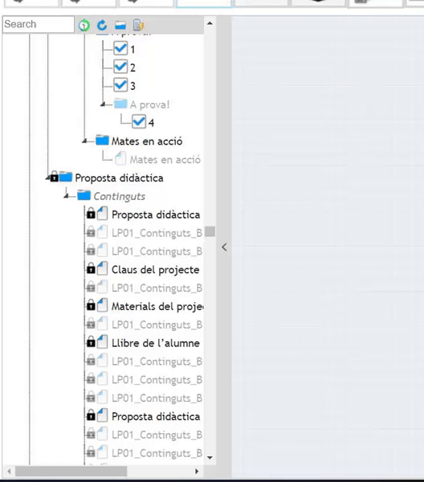
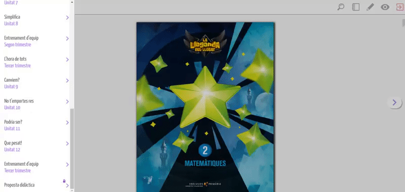

En este manual vamos a ver como se organizan y nombran las páginas en el libro del profesor, sus epígrafes, y múltiples características de manejo de la herramienta para poder conseguir el resultado deseado por la editorial.
Para poder logarse en el CAT es necesario disponer de:


Como ya indicamos en manuales anteriores, el TOC es el menú lateral izq. de la herramienta “Makers editor” en el que se encuentran todas y cada una de las pág. que contiene nuestro libro:
Para la preparación del TOC, es necesario tener en todo momento abierto el archivo pdf del libro del profesor que estemos generando.
Los dos primeros ítems del TOC son los Epígrafes principales. Se denominan respectivamente:
La primera de las páginas se denominará siempre como el primer ítem, es decir, Propuesta didáctica (o su traducción al idioma que corresponda). Esta página siempre debe llevar el título visible (is visible=si), ya que, de lo contrario, el Libro del profesor tendrá problemas de navegación web.
El resto de las páginas dependerán del pdf. Sólo se renombrarán las páginas que contengan un epígrafe en el pdf y además deberán llevar el campo is visible=si:
El resto de las páginas se dejan tal cual han sido volcadas desde el manifiesto, dado que, sus títulos no se mostrarán en el menú de la plataforma digital:
Si hubiera alguna duda de como se editan los títulos de cualquiera de los ítems puede consultarse el manual: